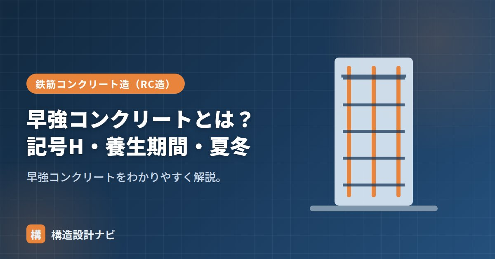

早強コンクリートとは？記号H・養生期間・夏冬

早強コンクリートとは、早強ポルトランドセメント（記号H）を使った、初期強度の発現が早いコンクリートのことです。普通コンクリートと同じ材料構成でありながら、セメントの粉末度を高めるなどして水和反応を早め、短期間で必要な強度に到達できるようにしています。工期短縮が求められる現場や、気温が低く強度発現が遅れがちな寒い時期の施工で特に活躍します。
- 早強コンクリートは記号Hの早強ポルトランドセメントを使い、初期強度の立ち上がりが早い。
- 材齢3日で普通コンクリートの材齢7日相当の強度が目安として得られる。
- 養生・型枠存置期間の短縮に有効だが、夏期は急結やひび割れに注意が必要。
記号H（早強ポルトランドセメント）
セメントの種類は記号で表され、普通＝N、早強＝H、中庸熱＝M、低熱＝Lなどがあります。早強（H＝High early strength）は、普通セメントより早く強度が出るのが特徴で、材齢3日で、普通セメントの材齢7日に相当する強度が得られる目安です。粒子を細かく粉砕した早強ポルトランドセメントは、水と接する表面積が大きくなることで水和反応が促進され、短期間で強度が発現します。反面、水和熱（発熱）も大きくなりやすいため、断面の大きい部材では温度ひび割れへの配慮も必要です。
| 記号 | セメントの種類 | 特徴 |
|---|---|---|
| N | 普通ポルトランド | 標準 |
| H | 早強ポルトランド | 初期強度が高い |
| M / L | 中庸熱 / 低熱 | 発熱が小さい（マス向き） |
設計基準強度
早強は「強度が早く出る」のが特徴で、最終的な設計基準強度（Fc）の管理は普通コンクリートと同様に行います。セメントの種類を変えても、コンクリートが到達すべき最終強度（材齢28日での設計基準強度）の考え方自体は変わりません。早く強度が立ち上がるぶん、型枠の存置期間や養生期間を短縮でき、工期短縮につながります。工程計画では、早強を使うことで何日短縮できるかを事前に試験練りや実績データから見積もっておくと計画が立てやすくなります。
養生期間
初期強度が早く出るため、所定の強度に達するまでの期間が短く、型枠の取り外しや次工程への移行を早められます。ただし強度発現が早いぶん、乾燥による初期ひび割れを防ぐ湿潤養生はしっかり行います。水和反応が早く進むということは、それだけ内部と表面の温度差・水分の逸散も早く起こりやすいということでもあるため、散水や養生シートによる保護のタイミングを普通コンクリートより前倒しで意識する必要があります。
夏期と冬期の違い
- 冬期（寒中）：強度が早く出るため寒中コンクリートに有利。凍結前に必要強度へ到達しやすい。
- 夏期（暑中）：もともと凝結が早いうえ気温も高く、急結・コールドジョイントのリスクが増す。打込み速度・養生に一層注意。
冬期は気温低下によって水和反応が鈍り、コンクリートが凍害を受けやすい未硬化の状態が長く続くことが問題になります。早強セメントを使うと、凍結する前に必要な強度（初期凍害を防げる強度）へ早く到達できるため、寒中コンクリートの対策として広く採用されます。一方、夏期はもともと気温が高く凝結が早いため、早強セメントを使うとさらに凝結が早まり、打込みの継目でコールドジョイントが生じやすくなる点に注意が必要です。
よくある間違い・注意点
早強コンクリートは「強度が早く出る」セメントであり、「最終強度が高くなる」わけではない点に注意してください。材齢28日以降の長期強度は普通コンクリートとほぼ同等になるため、高強度が必要な場合は高強度コンクリートなど別の対策が必要です。また水和熱が大きいため、マスコンクリートのような断面の大きい部材への安易な使用は温度ひび割れのリスクを高めることも覚えておきましょう。
早強を指定した現場では、生コン工場の在庫や配車の都合で急な変更が効きにくく、事前の相談を忘れると工期短縮効果が得られないまま打設日を迎えることがある。型枠の存置期間短縮は、机上の目安だけでなく実測の強度データで確認してから工程に反映するようにしている。
「寒中コンクリート」「暑中コンクリート」、全体像は「コンクリートの種類7選」をどうぞ。
強度発現の比較（図解）
使いどころと注意点
| 使いどころ | 理由 |
|---|---|
| 工期短縮が必要な工事 | 型枠の存置期間を短縮でき、施工サイクルが速くなる |
| 寒中コンクリート | 低温で遅れる強度発現を補い、初期凍害のリスクを下げる |
| プレキャスト製品 | 脱型を早めて型枠の回転率を上げられる |
| 緊急工事・補修工事 | 早期に供用開始できる |
| 注意点 | 内容 |
|---|---|
| 水和熱が大きい | 断面が大きい部材では温度ひび割れのリスクが高まる。マスコンクリートには不向き |
| 乾燥収縮が大きい | 粉末度が高くペースト量も増えるため、収縮ひび割れに注意 |
| 可使時間が短い | 凝結も早いため、運搬・打込みの時間管理がよりシビアになる |
| コストが高い | 普通ポルトランドセメントより単価が高い |
早強コンクリートは、もともと凝結・硬化が速いという特性を持ちます。これに夏の高温が加わると、可使時間が極端に短くなり、スランプ低下やコールドジョイントのリスクが跳ね上がります。早強を使うのは主に冬季や工期短縮が必要な場面ですが、夏季に使う場合は、遅延剤の併用や打込み時間帯の調整など、通常以上の時間管理が求められます。
よくある質問
Q1. 早強コンクリートの養生期間は短くできますか？
湿潤養生の期間は3日以上と、普通コンクリートの5日以上より短くできます。ただし、養生が不要になるわけではありません。むしろ水和反応が速い分だけ初期の水分消費が激しく、乾燥させると強度の伸びが止まるリスクは同じかそれ以上です。期間は短くても、その間の管理はより丁寧に行う必要があります。
Q2. 早強コンクリートは最終的な強度も高いのですか？
材齢28日の強度は、同じ水セメント比なら普通コンクリートと大きく変わりません。早強セメントの特徴は「強度発現が速い」ことであり、「最終強度が高い」ことではないためです。長期的にはむしろ、初期に急速に反応した分だけ組織がやや粗くなり、長期強度の伸びは普通セメントのほうが大きい傾向があります。
Q3. 超早強セメントというものもありますか？
あります。早強よりさらに強度発現が速く、材齢1日で早強の3日相当の強度が得られるとされます。緊急補修工事や、極めて短い工期が求められる場面で使われます。ただし水和熱・乾燥収縮がさらに大きく、可使時間も非常に短いため、適用場面は限定的です。一般の建築工事で使われることはほとんどありません。
まとめ
- 早強コンクリートは早強ポルトランドセメント（記号H）を使い初期強度が高い。
- 材齢3日で普通の7日相当。養生・型枠期間を短縮でき工期短縮に有効。
- 冬期の施工に有利。夏期は急結・コールドジョイントに注意する。
- 最終強度は普通コンクリートと同等。水和熱が大きい点にも配慮する。